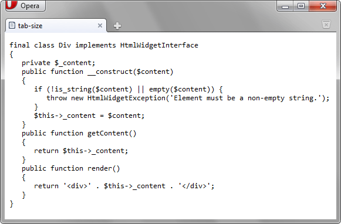

tab-size
Используется для изменения ширины отступа, заданного с помощью символа табуляции (клавиша Tab).
Краткая информация
| Значение по умолчанию | 8 |
|---|---|
| Наследуется | Да |
| Применяется | К блочным элементам |
Синтаксис
tab-size: <число>Значения
- <число>
- Число символов в табуляции. Значение должно быть целым положительным числом.
Пример
<!DOCTYPE html>
<html>
<head>
<meta charset="utf-8">
<title>tab-size</title>
<style>
pre {
-o-tab-size: 3; /* Opera */
-moz-tab-size: 3; /* Firefox */
tab-size: 3;
}
</style>
</head>
<body>
<pre>final class Div implements HtmlWidgetInterface
{
private $_content;
public function __construct($content)
{
if (!is_string($content) || empty($content)) {
throw new HtmlWidgetException('Element must be a non-empty string.');
}
$this->_content = $content;
}
public function getContent()
{
return $this->_content;
}
public function render()
{
return '<div>' . $this->_content . '</div>';
}
}</pre>
</body>
</html>
Результат примера в браузере Opera показан на рис. 1.

Рис. 1. Текст с изменённой табуляцией
Объектная модель
Объект.style.tabSize
Примечание
Opera до версии 15 поддерживает свойство -o-tab-size. Firefox поддерживает свойство -moz-tab-size.
Спецификация
| Спецификация | Статус |
|---|---|
| CSS Text Level 3 | Рабочий проект |
Браузеры
| Internet Explorer | Chrome | Opera | Safari | Firefox | |
| 21 | 10.60 | 15 | 6.1 | 4 | |
| Android | Firefox Mobile | Opera Mobile | Safari Mobile |
| 4.4 | 4 | 11.5 | 7.1 |